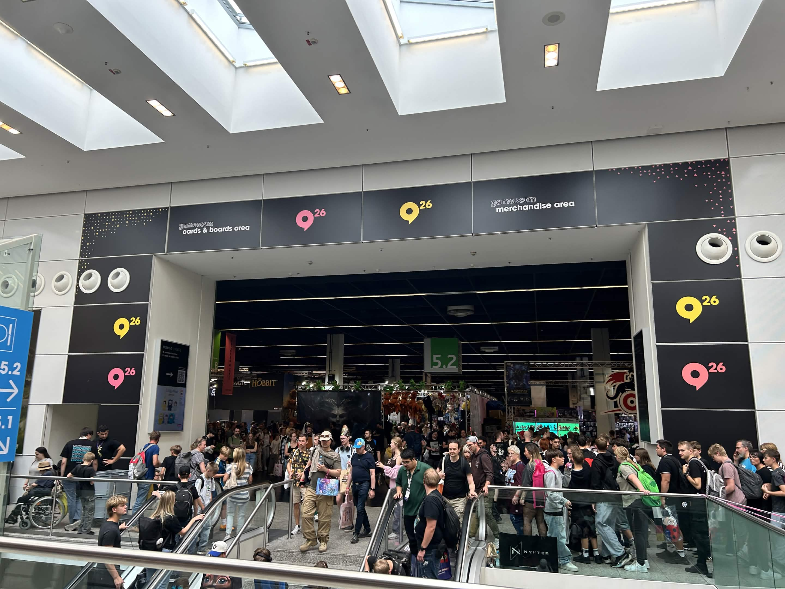

Starting Point - No Turning Back Please
First Blog Post of this incredible journey (Before everything taken by AI)
Read note →Hello, welcome in
I write about making games, figuring things out, and the little moments that make the process worth remembering.
Topics

First Blog Post of this incredible journey (Before everything taken by AI)
Read note →